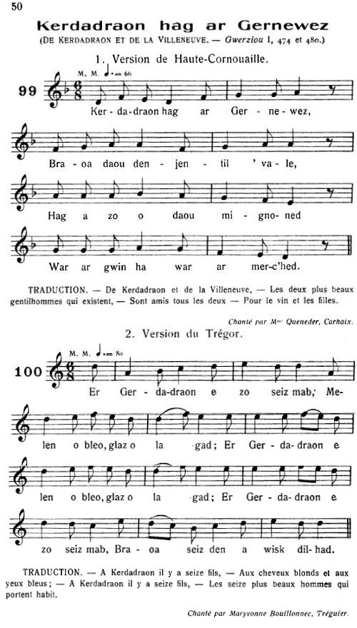
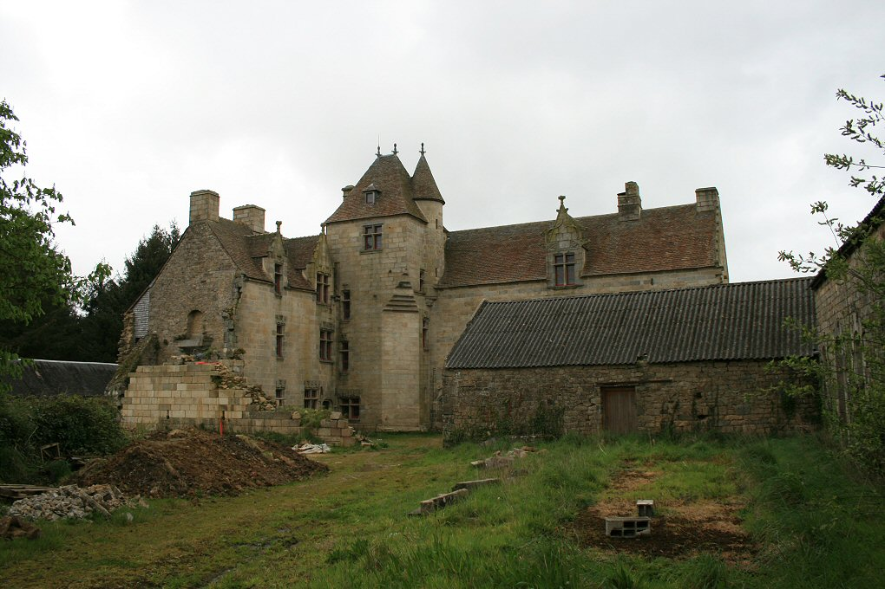

Penherez al Lezhouarnao
L'héritière de Lezhouarnao
The Heiress of Lezhouarnao
Chant collecté par Théodore Hersart de La Villemarqué
dans le 1er Carnet de Keransquer (pp. 232-234).
Mélodie 1 Mélodie 2
"Kerdadraon hag ar Gernewez"
Arrangement Christian Souchon (c) 2015
|
A propos des mélodies:
Les deux mélodies sont tirées des "Musiques bretonnes" (Gwerzioù ha Sonioù Breiz-Izel) de Maurice Duhamel, Paris , 1913, page 50. Bibliographie Ce chant existe: - Sous forme manuscrite, dans la collection de Penguer, tome III, 213, sous le titre "Kerandraon". - Sous forme imprimée, dans le recueil "Gwerzioù I" de Luzel, 2 versions: . "Kerdadraon hag ar Gernewez", Plouaret 1845; . "Ar Gerdadraon hag ar Gernewez", Pommerit-Jaudy. Remarque Selon Luzel, le château de Lezhouarnao pourrait être celui de Mézarnou où eut lieu l'enlèvement d'une héritière par La Fontenelle |
 |
About the tunes
Both melodies are drawn from "Musiques bretonnes" (Gwerzioù ha Sonioù Breiz-Izel) by Maurice Duhamel, Paris , 1913, page 50. Bibliography This song exists: - In MS form, in the de Penguer MS collection, part III, 213, titled "Kerandraon". - In a printed collection, "Gwerzioù I" edited by Luzel, 2 versions: . "Kerdadraon hag ar Gernewez", Plouaret, 1845; . "Ar Gerdadraon hag ar Gernewez", Pommerit-Jaudy. Remark According to Luzel, Lezhouarnao Manor could be identical with Mézarnou Manor where an heiress was abducted by La Fontenelle |
|
BREZHONEK p. 232 I Lezhouarnao koz, Kerdadraoù, neuze ar bennherez 1. - Demat, Aotroù a Gerdadraoù, - Ha c'hwi, Aotroù a Lezhouarnao: Demat ha joa, holl en ti-mañ. Ar benn-herez, pa n'he gwelan. 2. - Ait alese, pa gerfet! Ar benn-herez ne welfet ket... - Ar benn-herez, 'vel deus klevet D'an traoñ gant ar viz diskennet. 3. D'an traoñ gant ar viz ziskennas Ar Gerdadraoù e zaludas: - Demat, Aotroù ar Gerdadraoù! - Ha deoc'h, Penn-herez Lezhouarno! - II Lezhouarnao, ar gouarnourez 4. - Dallit, gouarnourez va alc'hwezioù, Ar re e krec'h, ar re en traoñ, Ar re e krec'h, ar re en traoñ, Ha gouarnit vat va madaoù! 5. Rak me ya bremañ da Bariz De gerc'hat tan an artifis Vit lakaat noblañs a Gerdadraoù E-barzh al ludu hag ar glaoù. 6. Lakit evezh mat, Gouarnourez, Na ye er-maes ar benn-herez. III Pennherez, Gouarnourez, neuze Kerdadraoù - Ar benn-herez a c'houlenne Digant he c'houarnerez, neuze: p. 233 7. - Va gouarnourez, din lavarit, Piv vezo er ker diskennet? - Ar Gerdadraoù hag e vreudeur, Kaerañ tudjentil zo 'r c'harter, 8. War ur marc'h glas, hañvet Pluton Hag eñ gwarniset gant leton Eñ gwarniset, gant léton gwenn Hag ur brid arc'hant en e benn. - 9. Ar benn-herez, 'vel m'hen glevas Ridezoù he gwele a regas; War ar pave e tiskennas... Ar Gerdadraoù a zaludas: 10. - Mar 'm-bije-me an asurañs Da vale e-mesk ho noblañs... - Ho-peus, Pennherez bihan, ho-po: Ar Gerdadraoù ho koñduo... - p. 234 IV Lezhouarnao, Gouarnourez 11. Al Lezhouarnao a c'houlenne Gant e c'houarnourez pa arrue: - Lakait evezh mad, gouarnourez, Na vefe er-maes ar Benn-herez, 12. Rak me lako noblañs Kerdadraoù E-barzh al ludu hag ar glaoù. - V Pennherez, Lezhouarnao 13. Kriz vije 'r galon na ouelje E Lezhouarnao neb a vije, O gweled noblañs Kerdadraoù E-barzh al ludu hag ar glaoù. 14. Ar benn-herez a lavare D'he zud e Lezhouarnao a-neuze: - Arsa, va zut, sed graet er-vat Pa lakit en tan va holl vat! 15. Hag ar pezh zo tre va zaou kostez, E voutan barzh an tan ivez? - Mar oc'h sur, penn-herezh, deus ho pleg, Ar Gerdadraoù e teuy er-maes! 16. Peadra 'walc'h e Lezhouarnao Da sevel noblañs Kerdadraoù. - KLT gant Christian Souchon |
TRADUCTION FRANCAISE p. 232 I Le vieux Lezhouarno, Kerdadro, puis l'héritière 1. - Bonjour, Monsieur de Kerdadro, - Bonjour, Monsieur de Lezhouarno: Bonjour à tous en ce logis! L'héritière n'est point ici? 2. - Entrez si vous le désirez! L'héritière n'y est point. Voyez... - L'héritière a tout entendu. L'escalier elle a descendu. 3. Elle a descendu l'escalier, Kerdadro vite elle a salué: - Bonjour, Monsieur de Kerdadro! - Bonjour, dame de Lezhouarno! - II Lezhouarno, la gouvernante 4. - Gouvernante, mes clés sont là: Celles du haut et celles du bas Prenez ce trousseau, c'est le mien, Veullez prendre garde à mes biens! 5. Je pars à présent pour Paris Car un feu d'artifice est requis Pour le manoir de Kerdadro Que réduire en cendre il me faut -. 6. Et, ma gouvernante, ayez soin, Que l'héritière ne sorte point. III L'héritière, la gouvernante, puis Kerdadro - L'héritière un jour s'approcha D'elle et elle lui demanda: p. 233 7. - A mes oreilles est venu Qu'en ville quelqu'un est descendu: - Sans doute, les frères Kerdadro, Des nobles du pays les plus beaux, 8. Un cheval gris nommé Pluton Porte l'aîné, ferré de laiton Il est ferré de laiton blanc Au mors une bride d'argent. - 9. L'héritière, entendant ce bruit A déchiré les rideaux du lit; Est descendue sur le pavé... S'en fut saluer son bienaimé: 10. - L'assurance je veux avoir D'être libre dans votre manoir... - Cette assurance vous l'avez: Kerdadro va vous y mener... - p. 234 IV Lezhouarno, la gouvernante 11. Lord Lezhouarno expressément A la gouvernante en arrivant Demandait: - Faites attention, Que ma fille reste à la maison! 12. Je m'apprête à mettre le feu Au manoir de Kerdadro sous peu. - V L'héritière, Lezhouarno 13. Cruel le cur qui n'eût pleuré A Lezhouarno quel qu'il eût été, En voyant le manoir brûler Des cendres, c'est ce qu'il en restait! 14. La pauvre héritière en sanglots Dit à ses parents à Lezhouarno: - Que pouviez-vous faire de mieux Que de mettre à mes biens le feu? 15. L'enfant que je porte en mon sein, Du feu doit-il prendre le chemin? - Etes-vous sure de cela, Que Kerdadro vienne chez moi! 16. Je possède à Lezhouarno Assez pour rebâtir Kerdadro. - Traduction Christian Souchon (c) 2015 |
ENGLISH TRANSLATION p. 232 I Old Lezhouarno, Kerdadro, then heiress 1. - Good day to you, Lord Kerdadro, - Good day to you, Lord Lezhouarno: Good day to all those who live here, Why does the heiress not appear? 2. - Do come right in, Don't stay outside! That she's not here be satisfied! - The heiress who had heard it all Rushed down the stairs into the hall. 3. The heiress ran all down the stairs, She greeted, taking all unawares: - Good day to you, Lord Kerdadro! - Good day, Heiress of Lezhouarno! - II Lezhouarno, housekeeper 4. - Lady housekeeper, take my keys I'm filled with concern it would appease, These keys will open every door. Keep an eye on my goods, therefore! 5. Since I am leaving to Paris; I'll fetch fireworks I need for this: Setting on fire Kerdadro Manor Burning it to ash and ember. 6. Lady housekeeper take great care, That the heiress stays in her lair. III Heiress, housekeeper, then Kerdadro - And a couple of days later, The heiress asked the housekeeper: p. 233 7. - Housekeeper, answer me frankly! Who is coming to our city? - Lord Kerdadro and his brothers, The handsomest men in these quarters. 8. He rides a grey horse named Pluto, Each leg fitted with a brass horseshoe, Fitted with horseshoes of white brass, And silver bridle, silver straps. - 9. The heiress sprang out of her bed Presently she tore her sheets to shreds; She climbed down to the paved street And hastened Kerdadro to greet: 10. - Give me a formal assurance That your house will be my residence! - Yes, little heiress, it will be: Lord Kerdadro to that will see. - p. 234 IV Lezhouarno, housekeeper 11. Lord Lezhouarno asked one day The housekeeper, to her great dismay: - Would you take care, my housekeeper That she does not leave our manor? 12. For I'm going to set on fire The manor of the Kerdadro Squire. - V Heiress, Lezhouarno 13. Cruel-hearted were whoever had Been at Lezhouarno and had not cried, Seeing Kerdadro Manor on fire: It was ablaze, a dismal pyre! 14. The heiress asked soon thereafter Her parents, at Lezhouarno Manor: - Now, you are right, said the heiress In burning down all I possess! 15. Don't forget the child in my womb To be burnt like all the rest to doom! - Are you sure of your pregnancy? Kerdadro may come presently! 16. We've got enough at Lezhouarno To restore Manor Kerdadro! - Translated by Christian Souchon (c) 2015 |

Manoir de Mézarnou à Plounéventer (entre Le Folgoët et Landivisiau)
Il a été récemment restauré (cf. La Fontenelle)